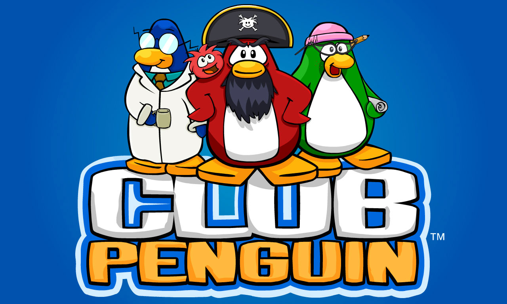

In "404 Page not found" Kate Wagner speaks of her experience with growing up with the internet. "I'm a digital native, older than most," Wagner explains. She expresses how she's seen the internet grow through different phases. From older cybercities, to websites like myspace, to adobe flash downloads, to apps like Instagram, Wagner experiences the internet change throughout her life. For instance, she remembers, "[i]n 2013, Myspace suddenly purged most of its users' content, including blogs, custom profiles, videos, and posts." She explains that Facebook was a big competitor to Myspace. Furthermore, there was racial prejudice amongst some of the public against Myspace, and Wagner believes people who are white or of a higher socioeconomic status preferred Facebook at the time. There are several things that led to people seeing Myspace a "ghetto." One thing Wagner writes about is the customizability of Myspace. Often using external websites, users could customize their pages in very personalized ways including adding glitter to their pages. She explains that Myspace pages were often seen as busy as people could add as much customization as they wanted to their page, and there is not cohesion as you look at the variety in people's customization. Although the personalization of Myspace was favored by many, ultimately it was put to rest while the website Facebook still exists. Facebook has transitioned into app versions and people often favor the simplicity of the design and the cohesion across platforms. Many young people do not like Facebook, for instance I may have the app, but I rarely use it, although I do interact with Meta in other ways.
Although I only saw my older sibling use Myspace, I never had an opportunity to interact with the website by myself. Wagner writes, "Like many people my age and older, I miss the pre–social media internet. The new internet knows this, and it capitalizes on my nostalgia as it eats away at the old internet. It amounts to an unforeseen form of technological cannibalism." As someone probably around seven years younger than the author, Although I have grown up with the internet too, what I experienced is much different from Wagner. I see Millennials obsessed with their nostalgia and spending all their money on Disney Lego sets, but when I look at the areas I am nostalgic in, it does not involve giving my money to large corporations. For instance, my first interaction with the internet was playing Miniclip and Club Penguin in 2006. Club Penguin was bought by Disney and heavily commodified. It only became fun if you were a playing member. I think people tried to buy memberships in the beginning, but eventually it was too expensive to keep up with, and not fun anymore with just the free components. Wagner states, "Flash, to name just one example—which was a huge player in the early explosion of entertainment on the net, from websites that aggregated embedded Flash-based, arcade-style video games like those developed by Miniclip or CoolMath4Kids to earlier web projects like Homestar Runner—was not supported by the iPhone or Android, and this led to its rapid "obsolescence."" Club Penguin all went downhill when Disney acquired it. It started as a flash game and went through many phases, but Club Penguin was deleted when it stopped being a worthwhile asset to Disney. The only game I see that survived Miniclip is 8ballpool. This game was originally a flash game, but developed into an app. “Today, roughly 90 percent of time spent on our phones is devoted to apps—not the web.” 8ballpool only survived Miniclip because it was converted to an app. One reason 8ballpool is one of the rare surviving games from Miniclip is because it has so many components that utilize gambling tokens that can be bought with real money. "Hence, [huge tech conglomerates] think, because this stuff isn’t profitable, it must mean nobody wants to see it; and so nobody does. Non-virality and false obsolescence, when combined with link rot—the natural atrophy of links across time—have led to the quiet erasure of entire swaths of the internet." Wagner writes that we begin to lose platforms of value when they stop being of value to the companies creating them. Club Penguin and Miniclip did not survive as websites, although bits and pieces of them can still be found in the app store.
The only pieces that did survive exist because they can be monetized. Wagner is not happy with this status quo. She argues, "It’s about time for a little revenge from the old internet. Or how about revenge from the older, older internet: communism." When I see nostalgia in my own age group, sometimes it is linked with this concept of communism in opposition to the nostalgia of Wagner’s generation aligning with capitalism. Club penguin does still exist, unofficially, and now it is communist. Although the original website did not exist, coders of the website reuploaded the code onto their own browsers and created a version of club penguin that is the same but nothing costs money. This means I can experience the nostalgia of my childhood in a way that surpasses the frustration I experienced when Disney monetized Club Penguin. Today, anyone can get the full club penguin experience for free, even if it is not the official and original website.